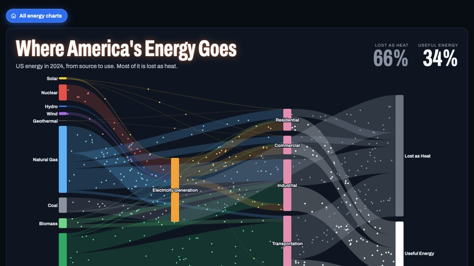
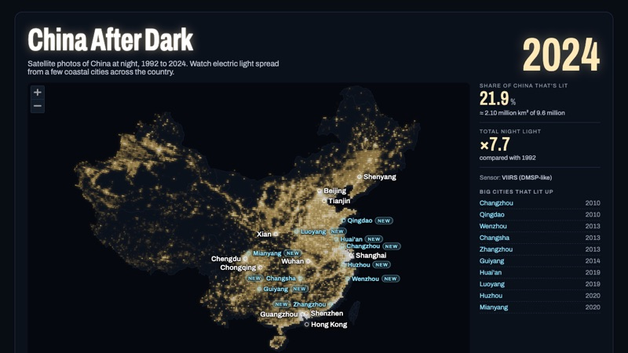
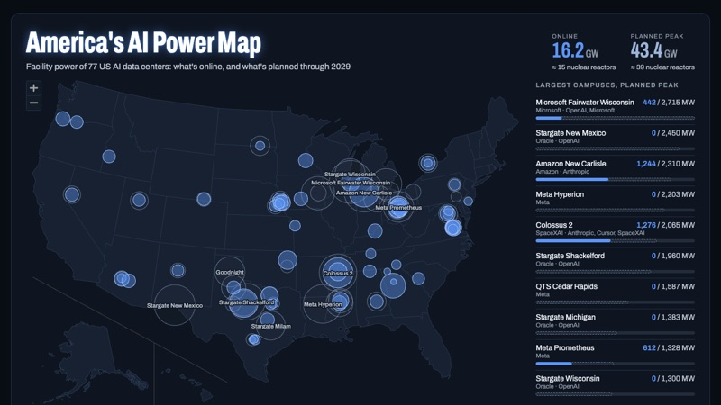

Interactive charts
Energy, Charted
How electricity is made and used, from Norway's hydropower and China's spreading night lights to the AI data centers reshaping US demand. Pick a chart to explore.

Where America's Energy Goes
All US energy in 2024, from source to use. Follow the particles and a short guided tour: two-thirds of it is lost as heat.
Open chart →
China After Dark
Satellite night lights from 1992 to 2024. Watch light spread from a few coastal cities across the country, and see which big cities lit up, and when.
Open chart →
America's AI Power Map
77 US AI data centers, online and planned. Play the timeline from 2023 to 2029 and watch capacity grow from almost nothing to more than 40 GW.
Open chart →
How Much Power Does AI Need?
One planned AI campus next to everyday power users, from a bus depot to a whole city and a nuclear reactor. Switch to "US homes" to see it in household terms.
Open chart →
Norway's Power Stations
Every generating station with a known location, sized by installed capacity. 39.2 GW in total, and 85% of it comes from water.
Open chart →